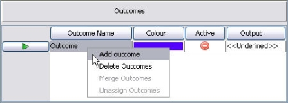
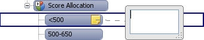
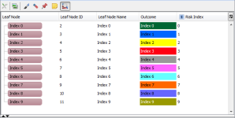
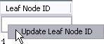
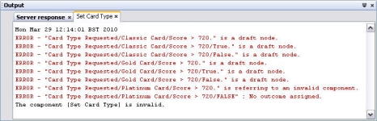

Value Setter
The Value Setter component enables the user to assign an output characteristic and an associated value or value characteristic to each leaf node of its segmentation tree.
During execution, the associated value that has been entered at the leaf node or the value characteristic that has been assigned will be returned to the output characteristic.
A value setter is made up of:
One or more Output Characteristics
An output characteristic is assigned to each output column in the Outcomes area. It is these output characteristics that hold the value or value characteristic returned at each leaf node when the value setter is processed for each record.
A Value or Value Characteristic
Once an output characteristic has been assigned to an output column in the Outcomes area, the user will need to
either:
type in a value that will be associated with the leaf node when the value setter is executed
or
assign a value characteristic that will be associated to the leaf node when the value setter is executed.
A value setter consists of:
- tree splits that form the graphical representation of segmentation rules which together form the tree used in the value setter. Tree splits contain the information used to group those records which are to be treated in the same way.
- leaf nodes, the end points of the tree.
- outcomes, where an associated value or value characteristic is assigned that will be applied to each record falling into a given outcome to be returned to the associated result characteristic.
- select characteristic area, area where outcome characteristic(s) and value characteristic(s) are selected for use in the value setter.
An outcome can be associated with one or more leaf nodes so the same outcome can be applied to multiple leaf nodes.
A value setter can be created from the Explorer window.
| You will only be able to add a component type that has been allowed for the selected folder. If it is not allowed it will not be listed and therefore cannot be created. See the Manage allowed component types help page for more information on this. |
To create a value setter
- From the Explorer window right click at the required folder level and select Add component.
- Select Value Setter.
- In the Create component dialog enter the name of the value setter.
- Select the Open new components in component editor check box.
- Click on the OK button.
The Value Setter Editor will open allowing you to edit a value setter.
The value setter name will be listed in the Explorer window under the selected folder level. The component is identified by the icon.
If you do not wish the editor to open, keep the check box de-selected. From the Explorer window right click on the value setter and select Open.
To edit a Value Setter Tree
|
Class Sets, Matrices and Index Tables that have been defined against Logical Data Models can only be used in scripting components. If any are used in a Value Setter, an error message similar to the following will be displayed: |

The same features used to build segmentation trees are used to build the trees used in a Value Setter. Segmentation components or segmentation rules can be added to any of the leaf nodes of the value setter's tree to form tree splits. Components added from the Resources window are referenced by the tree and other components that use them.
To add a referenced component to a leaf node
- With the Value Setter editor open click on the Resources window. The valid component types will be listed.
- Expand the component type list to display all the available components of that type. For example:

- Drag and drop the required component onto the leaf node you require.

- The new tree split will be added to the tree. The new tree split will provide alternate pathways for records that satisfy the criteria defined in this new segmentation rule.
- Repeat steps 2 and 3 until all the rules you require have been added to the tree.


You can now go on to define leaf node names, outcomes and output characteristics and values to the value setter.
or
The same features used to build segmentation trees are used to build the trees used in a Value Setter. Components can be referenced from within the value setter (this means that they can be changed from outside of the value setter and may be shared by other components) alternatively a component can be created from within the editor and will be embedded into the value setter's tree. This means the component details are only used by this value setter and can only be edited from within the value setter.
| Only Class Set, Matrix, Boolean Expression and Segmentation Tree are supported for this version. |
To add an embedded tree component onto a leaf node
- With the Tree editor open right click on a particular leaf node and select Insert Embedded. The Insert Embedded Component dialog is displayed.

- Overtype New Tree Element with a unique name (within the tree) for the component and then select the required component type.
- Click on the OK button to confirm the selection and close the dialog.
The system will open the editor for the component you have chosen. - You will now need to edit the embedded component. See the relevant topics within Class Set, Matrix, Boolean Expression and Segmentation Tree.
- Once you have finished editing the component click on the Close Internal Editor button.
The component will be added to the tree as a new split. The new tree split will provide alternate pathways for records that satisfy the criteria defined in this new segmentation rule. - Repeat steps 1 and 5 until all the embedded segmentation rules you require have been added to the tree.

You can now go on to define leaf node names, outcomes and output characteristics and values to the value setter.
Segmentation components, such as Boolean Expressions, Class Sets, Matrices and Segmentation Trees can be referenced from within the tree (this means that they can be changed from outside of the tree and may be shared by other components). Alternatively these segmentation components can be created from within the Tree editor and will be embedded into the tree. This means the component details are only used by this tree and can only be edited from within the tree.
Should the user wish to change an embedded segmentation component to a referenced segmentation component or a referenced segmentation component to an embedded segmentation component, in the Tree editor there is a Convert option.
To convert a segmentation component
- With the Tree editor open, on any of the tree splits, right click and select Convert.

The system will open the Convert Component dialog.
- Type the name you require in the Convert To box.
- Click on the OK button.
The system will convert the component.


| When you are converting an embedded component into a referenced component, the system will not allow you to use a name that already exists in the folder that is listed in the Reference component's folder path. Either change the name or click on the Change button and select a different folder. |
If you have converted an embedded component to a referenced component the new referenced component will appear in the Resources window and be available for use in other components. If you have converted a referenced component, the referenced component will still exist in the Resources window, but a new embedded component will exist in the editor.
Outcomes are assigned to the leaf nodes of a tree in a value setter. Leaf nodes assigned the same outcome will have the same result characteristic and associated value or value characteristic applied to them.
To create an outcome for a tree in a value setter
- With the Value Setter editor open, right click in the Outcomes area and select Add Outcomes.

An outcome will be created with a new colour and a default name. - Replace the default name with a new unique name for the outcome.
- Double click on the outcome colour to Change an outcome colour(if desired) and select a new colour from the Pick a Colour screen.
- Repeat for all the outcomes required.
You will now have the outcomes you require for the value setter's tree.
When a value setter is executed, the associated value or value characteristic that has been assigned in the Output column for the outcome for a specific leaf node will be returned to the result characteristic.
To assign an output characteristic to the Output column
- With the Value Setter editor open and in the Select Characteristic area, locate the logical data source you require.
- Click on the Expand + button to list all the characteristics contained in the logical data source.
- Select the characteristic you require.
- Drag and drop the characteristic onto the header of the output column in the Outcomes area.
The name of the characteristic will replace Output as the label of the output column.
Type a value, assign a value characteristic or configure the outcome to Do Nothing to fully configure the outcomes in the value setter.
An Output column is added to the Outcome area and enables the user to assign a results characteristic and an associated value or value characteristic to each leaf node of the tree. It is this value or value characteristic that will be returned to the result characteristic when the value setter is processed for each record.
There are two methods which can be used at the same time in Value Setter tree. These are:
- Value
- Value Characteristic
In addition, if the user does not wish to enter a value or assign a value characteristic for a particular outcome the user can assign Do Nothing.
To configure the output value by entering a value
- With the Value Setter editor open, in the Outcomes area, within the Output column, for the outcome you require, single click to enter the value you require (double-click to edit it once it has been entered).
- Type the value you wish to be assigned to the results characteristic for this outcome and press Enter.
- Repeat steps 1 to 2 until all the outcomes that need a value entered have been configured.
Continue configuring the value setter as required.
To configure the output value by assigning a value characteristic.
- With the Value Setter editor open and in the Select Characteristic area locate the logical data source you require.
- Click on the Expand + button to list all the characteristics contained in the logical data source.
- Select the characteristic you require.
- Drag and drop the characteristic into the Outcomes area, into the cell you require.
- Repeat steps 1 to 4 until all the outcomes that need a value characteristic assigned have been configured.
Continue configuring the value setter as required.
| You can copy and paste values for the value setter from Excel. However the size of the paste area must be the same size as the copy area. |
In order for a value setter to be deployed all the leaf nodes must have an outcome assigned to them. An outcome can be assigned to one or more leaf nodes. Leaf nodes assigned the same outcome will have the same results characteristic and associated value or value characteristic applied to them. In a value setter you can have unassigned outcomes. In the outcomes area these are displayed with the following icon.
The user can determine how the outcomes are displayed in the tree by right clicking on an outcome in the tree and selecting Outcome Display followed by Text, Colour or Mixed.
| Text - will display only the names of the outcome assigned to the leaf node Colour - will display only the colour of the outcome assigned to the leaf node Mixed - will display both the colour of the cell and the outcome name assigned to it |
To assign an outcome to a leaf node in a value setter
- With the Value Setter editor open and in the Outcomes area, click on the outcome you wish to assign.
The Assign outcome button on the toolbar will automatically become activated.
on the toolbar will automatically become activated. - In the Value Setter editor click on the outcome of the leaf node that you wish to assign the outcome. The same outcome will be assigned to any leaf nodes you select until you select another outcome in the Outcomes area.
- Repeat as necessary to assign an outcome to all of the leaf nodes.
- Select how the colour and text is to be displayed by right clicking on any outcome name in the Value Setter editor and selecting Outcome Display followed by Text, Colour or Mixed.

| You must already have created the outcome(s) and the leaf nodes to which they are to be assigned. |
Each outcome should now have an outcome assigned. Those leaf nodes that have not had an outcome assigned will have <<Unassigned>> displayed in the Outcome column, <<Undefined>> displayed in the Output column and the following blue question mark icon displayed on the leaf node itself.
If the user does not wish to enter a value or assign a value characteristic for a particular outcome the user can assign "Do Nothing".
To assign do nothing
- With the Value Setter editor open, in the Outcomes area, within the Output column for the outcome you require, right click on the cell and select Assign Do Nothing.
Do Nothing will be assigned as the value for this outcome's output cell. - Do Nothing can be assigned to all outcomes by right clicking on the Output column itself and selecting Assign Do Nothing To All.
When Do Nothing is encountered during execution, the leaf node is simply skipped, it will not appear in the trace.
The value setter will now be ready for use within other components.
Each leaf node of a value setter's tree should have a leaf node name. The leaf node name is a user defined description that identifies the action that will be applied to any record that falls into this leaf node.
To define a leaf node name in a value setter
- With the Value Setter editor open left click on the first <<Leaf Node Name>> that needs defining and type a description.
Repeat until all the leaf nodes that need to have a description given to them have been completed. Auto Generate that is access by right clicking underneath the Leaf Node Name column in the tree editor enables the user to automatically generate leaf node names in a tree if required.
Annotation can be added to any node of the value setter's tree and is used to provide additional information to the user without affecting the functionality.
To add annotation to a node of the tree
- With the Value Setter editor open either click on the Add Annotation icon on the tool bar
 and click on the node that you wish to annotate, or right click on the node and select Add Annotation.
and click on the node that you wish to annotate, or right click on the node and select Add Annotation.
The system will open the annotation box. - Type the information you require in this box.
- To close the box click anywhere on the Main editor.

The node will now have annotation assigned to it. You can continue editing the value setter.
Once annotation has been added to a node in the value setter's tree the user can edit it as required.
To edit Annotation in a tree
- With the Value Setter editor open right click on the node to which annotation has been assigned and select Edit Annotation.
The system will open the annotation box. - Amend the information contained in this box as required.
- To confirm the changes you have made, click anywhere on the Main editor to close the box.
The annotation will be amended.
You can continue editing the value setter.
Annotations can be hidden from view in the value setter's tree.
| Hide All Annotation and Show All Annotation will only be available if you have annotation assigned in your value setter. |
To show or hide all annotation
- With the Value Setter open, right click on any node and select Show All Annotation.
All the annotation will be displayed. - With the Value Setter editor open, right click on any node and select Hide All Annotation
All the annotation that was visible in the Value Setter editor will be hidden from view.
You can continue editing your value setter.
Annotations can be removed from the node of a value setter's tree.
To remove annotation from a node of the tree
- With the Value Setter editor open, right click on the node that has annotation and select Remove Annotation
The annotation will be removed.
You can continue editing your value setter.
To make it easier for the user to assign outcomes and output to the value setter's tree, the user can select to display only the leaf nodes of the tree in the value setter editor.
| By moving the cursor over the leaf nodes, full path to root information for each leaf node will be displayed. |
To display only the leaf nodes of a tree
- With the Value Setter editor open, click the Table View icon.

The system will update the view to display only the leaf nodes of your tree.

Define leaf node names and assign outcomes and outputs to your value setter as required.
The Update Leaf Node IDs option allows the user to update leaf nodes that currently contain -1 (blank leaf nodes) or renumber (overwrite) all of the leaf nodes in the whole tree using user defined increments. The system will not allow the user to use a number that has been used previously in the tree or is currently in use.
| For example, if you have a leaf node with 1 assigned, followed by blank leaf nodes and you choose to update these using an increment of 10, if the next number available is 2, the next three leaf node ids will be numbered 2, 12 and 22. |
To update leaf node ids
- With the Value Setter editor open, right click underneath the Leaf Node ID column in the Segmentation Tree editor and select Update Leaf Node ID.

The system will open the Update Leaf Node ID dialog. - Select the Update blank leaf nodes radio button to update only leaf nodes ids that currently contain -1.
- Select the Renumber all leaf nodes radio button to renumber (overwrite) all the leaf node ids within the whole tree.
- Select from the Next Available Number drop-down box the number that you wish to use next.
- Select from the Increment drop-down box the increment number you wish to use.
- Click on the OK button.
| To update the leaf node IDs, click on the split header row underneath the Leaf Node ID column. This will update the ids in the sub tree below the selected split header. |
The leaf nodes will be updated.
The same features used to build segmentation trees are used to build the trees used in a Value Setter. A draft split is a split that is not based on any pre-defined characteristic or rule, it is simply an outline of a split that could be created using a boolean expression, class set, matrix or segmentation tree. Tree splits that are created using these referenced components or these embedded components rely on pre-defined characteristics existing in the logical data source. A draft split is created without the need for these characteristics to exist in a system.
To add a draft split to a leaf node
- With the Value Setter editor open either click on the Palette tab and drag and drop the draft split onto the root node or leaf node you require
or right click on the leaf node/root node and select Insert Draft Split. - The system will automatically add a draft split to your tree that contains two leaf nodes.

- Repeat steps 1 and 2 until you have added all the draft splits you require.

You can now go on to define the name of split headers and leaf nodes and add additional leaf nodes and draft splits as required.
After they have been created, there are a variety of ways in which draft splits can be edited.
Additional draft splits can be added to the tree by the user at any point of the tree.
To add a draft split to an existing leaf node
- With the Value Setter editor open, select the leaf node where you wish the draft split to be added and either right click and select Insert Draft Split, or with the leaf node selected press the Insert key on your keyboard.


An additional draft split will be created in the tree.
Each leaf node of a value setter's tree should have a leaf node name. The leaf node name is a user defined description that identifies the action that will be applied to any record that falls into this leaf node.
To define a leaf node name in a value setter
- With the Value Setter editor open left click on the first <<Leaf Node Name>> that needs defining and type a description.
Repeat until all the leaf nodes that need to have a description given to them have been completed.
Once a draft split has been added to the tree the user can easily add descriptions to both the split header and the leaf nodes.
To add a description to the draft split
- With the Value Setter editor open, select either a split header or a leaf node from within a draft split.

- Begin typing.
The system will instantly start adding the name you are typing to the split header or leaf node.
- When you have finished typing, press Enter to confirm the name.


Continue until all the split headers and leaf nodes contain the description you require.
Once a draft split has been added to the tree the user can easily add additional leaf nodes to the draft split.
To add additional leaf nodes to the draft split
- With the Value Setter editor open, select the split header where you wish the leaf nodes to be added and either right click and select Insert Draft Outcome, or press Enter on your keyboard.
An additional outcome will be created.
- To add an additional leaf node at a specific point, select the leaf node above the position that you wish the leaf node to be added, then either press Enter on your keyboard or right click and select Insert Draft Outcome.

{kind=link}
{kind=link}
{kind=link}
{kind=link}
{kind=link}
The leaf node will be added below the leaf node you have selected.
A draft split is a split that is not based on any pre-defined characteristic or rule, because of this the user is allowed to delete a draft leaf node within the tree editor.
To delete a draft split leaf node
- With the Value Setter editor open, within a draft split select the leaf node you wish to delete, then either right click and select Delete Draft Outcome, or press Delete on your keyboard.
The leaf node of the draft split will be deleted.
Once the user has successfully created a value setter, the user will be able to test it using the Batch or Interactive Tester.
The user can test a segmentation tree either by manually typing in data for the input characteristics referenced in the value setter or by performing a test against a known data source.
To perform an interactive test
To test a value setter manually by entering data into the relevant fields for the input characteristics, use the Interactive Tester.
To perform a batch test
To test a value setter using data from a .csv file, from the Explorer window, right click on the component and select New Test Project to use the Batch Tester.
Validate checks the value setter to ensure that every component that the value setter references or uses is valid. Valid means the component is complete, it is of the correct format and any links to other components (where applicable) are valid and that the root node ids have been configured. If the value setter is invalid information will be provided in the Output window.
To validate a value setter
- With the Value Setter editor open click on the Validate icon

- The system will check the validity of the tree and display in the Output window information on any areas of the value setter that are invalid.

- The final line of information in the Output window will provide you with a summary of the validity of the value setter.
{kind=link}
You can now continue editing the value setter.
When the contents of the value setter are displayed in the Navigator, all the Bookmarks that have been assigned to split headers in the value setter's tree are displayed separately. Clicking on a Bookmark in the Navigator window will open the tree in the Value Setter editor at that point in the tree, giving the user quick access to a specific split header in the tree and collapse the rest of the tree.
To open a tree using a Bookmark
- With your Value Setter already open, in the Navigator window, double click on the Bookmark that you wish to access.
The system will move the value setter's tree so that the split header is now visible in your editor. The split header will be selected.
You can continue editing your value setter.